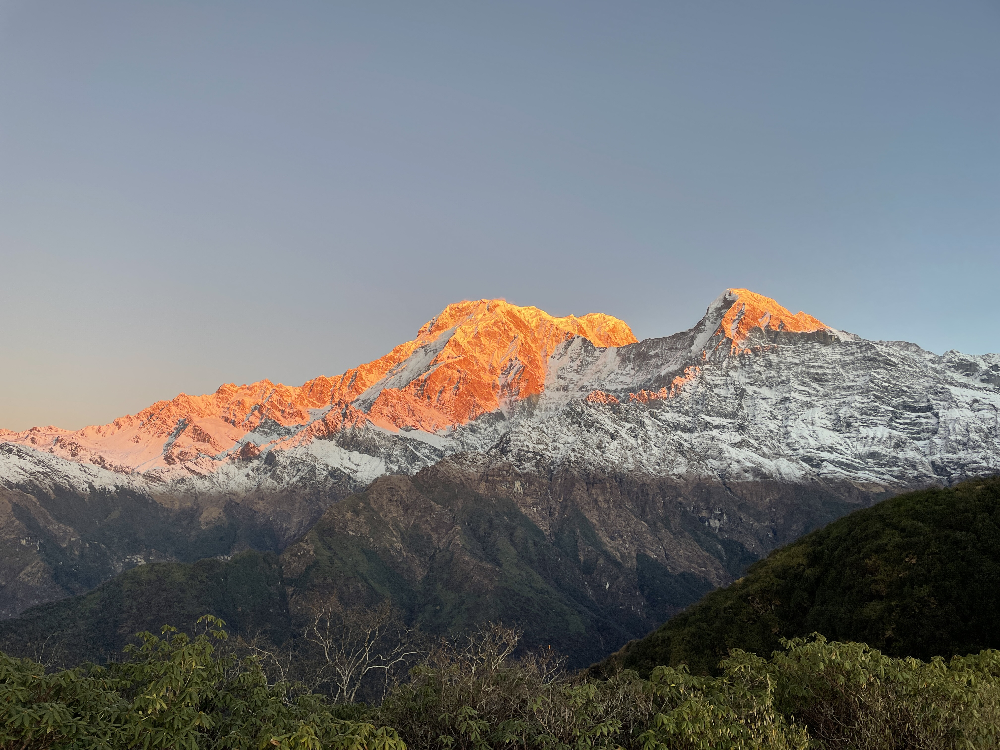
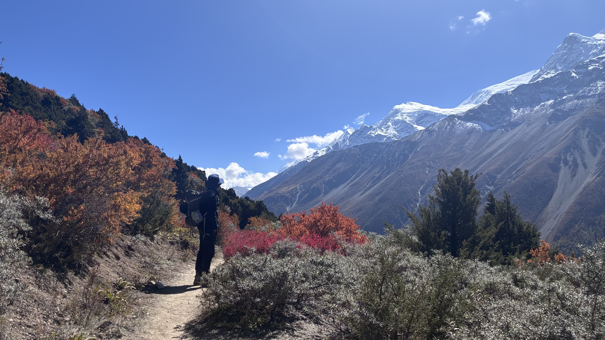

The Annapurna Circuit is often called the world's greatest trek, and after completing this 18-day journey, I can understand why. This epic adventure took me through diverse landscapes from subtropical forests to the high-altitude desert of the Tibetan Plateau, culminating in the challenging crossing of Thorong La Pass at 5,416 meters.
Starting in the lowland villages of Besisahar, we gradually ascended through terraced rice fields and lush rhododendron forests. Each day brought new vistas of the Annapurna range, with peaks like Annapurna II, III, and IV dominating the skyline.
The Journey to Manang
Reaching the traditional village of Manang at 3,540 meters was a milestone. This ancient trading post offered stunning views and a crucial acclimatization day. We explored the surrounding valleys and visited the Ice Lake, which tested our adaptation to the altitude.

The traditional village of Manang, nestled in the Himalayas
The people of Manang, with their Tibetan-influenced culture, were incredibly welcoming. We visited the ancient monastery and learned about their unique traditions that have been preserved for centuries in this remote valley.
"Crossing Thorong La isn't just about reaching the highest point—it's about pushing your limits while surrounded by some of the most spectacular scenery on Earth."
Thorong La Pass: The Ultimate Challenge
The day of the pass crossing began at 3 AM from High Camp. With headlamps illuminating the frozen trail, we began the slow, steady ascent. The air grew thinner with every step, and the temperature dropped well below freezing.

The challenging ascent to Thorong La Pass at 5,416 meters
Reaching the prayer-flag-adorned summit was an emotional experience. The 360-degree views of the Annapurna and Dhaulagiri ranges were absolutely breathtaking. After brief celebrations, we began the long descent to Muktinath on the other side.
Practical Tips for the Circuit
Best Time to Trek: October-November for clear skies and stable weather, or March-April for rhododendron blooms.
Training: Focus on cardiovascular endurance and leg strength. Practice hiking with a loaded backpack.
Altitude: Take acclimatization seriously. Don't rush the ascent, and listen to your body.
Gear: Quality waterproof boots, warm layers, and a good sleeping bag are essential.
Completing the Annapurna Circuit was one of the most challenging and rewarding experiences of my life. The combination of natural beauty, cultural immersion, and physical challenge makes this trek truly unforgettable.